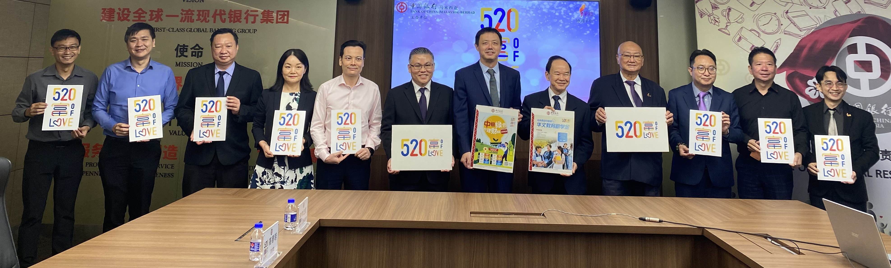

马来西亚中国银行推出中国银行华文教育助学金计划
全体来宾合影。左起为颜彣澔、江伟俊、李浤民、张凤梅、高德明、江锦兴、黄磊、陈大锦、杨应俊、林国元、苏耀原和梁胜义。马来西亚中国银行（简称：马中行）于2022年首次推出“中国银行华文教育助学金”计划，以帮助面对经济困难的全国华文独中和关丹中华中学的学生们。该助学金将资助有关的2023新学年的初一新生。在首阶段，马中行拨出12万令吉，以发放240份，每份500令吉的助学金。只要家境清寒，需要经济资助的学生，都可通过学校提交申请。
2022年10月4日，董总主席陈大锦在推介礼上致词说，此计划贯彻中国银行“饮水思源、深耕本地”的企业宗旨，推动人文素养教育的传承，扶弱助贫，奉献当地社会，体现崇高的大爱精神。
他感谢中国银行热心公益，积极支持华文教育，也希望有更多工商企业团体向中国银行看齐并提供援助，让更多莘莘学子受惠，避免学生因经济困难而放弃学业。
同时，除了助学金计划外，中国银行也通过一系列富有意义的活动，来提升学生的理财观念，让学生从中学习并培养良好的理财习惯。此外也推行“中银绿色与理财杯短视频创作比赛”，开放给华文独中学生参加。
中国银行伸出援手和表达关怀，提供助学金给面对经济困难的学生，是雪中送炭的义举，对华文教育很有意义。董总衷心感谢中国银行热心公益，积极支持华文教育，推出“中国银行华文教育助学金”计划。
有意申请者可在该助学金于2023年1月1日开放申请时，浏览董总网页（https://student.dongzong.my/），以了解申请简则。
出席推介礼的嘉宾为马来西亚中国银行副行长暨志工团队顾问黄磊、财富管理总监兼志工团主席江锦兴、中行志工团队副主席李浤民、总经理张凤梅、总经理高德明；董总主席陈大锦、副主席杨应俊，董教总华文独中工委会奖贷学金委员会主任林国元、副主任苏耀原，董总执行长梁胜义、学生事务局局主任颜彣澔和秘书室主任江伟俊。